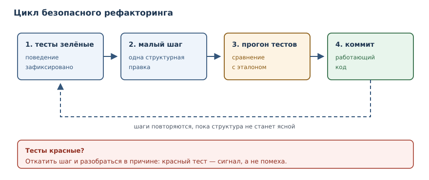
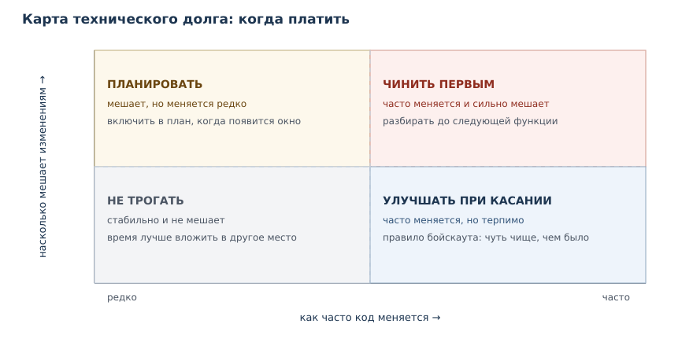

Запахи кода, рефакторинг и сопровождение
Как распознавать деградацию кода, безопасно улучшать его и сопровождать систему в эксплуатации.
В этой главе
Программа почти никогда не остаётся такой, какой её написали. Требования меняются, появляются новые сценарии, исправления наслаиваются на исправления. Если структуру кода не поддерживать, изменения становятся всё дороже: чтобы поправить одну строку, приходится читать сотню, а любая правка грозит сломать что-то в другом месте. Эта глава о том, как замечать ранние признаки деградации, как улучшать код, не меняя его поведения, и как сопровождать систему, когда она уже работает у людей.
53.1 Зачем это нужно
Представьте функцию, которая считает стоимость заказа. Сначала в ней было
пять строк. Потом добавили скидку для оптовых покупателей, затем особые
условия для VIP, затем доставку. Через год это двести строк с четырьмя
уровнями вложенности и числами вроде 0.93 без объяснений. Каждое следующее
изменение требует всё больше времени, а тесты покрывают только половину
ветвей.
Такая деградация не происходит из-за одного плохого решения. Она накапливается из мелких компромиссов: «сейчас некогда, потом поправим». Потом не наступает, и цена исправления растёт. Профессиональный подход состоит из трёх частей: видеть признаки проблемы, устранять их малыми безопасными шагами и честно учитывать, что именно осталось неисправленным.
53.2 Что вы сможете после этой главы
Глава даёт практические критерии, а не только названия приёмов. К концу вы будете уметь:
- узнавать типичные запахи кода и объяснять, чем каждый из них опасен;
- проводить рефакторинг так, чтобы поведение не менялось, и проверять это тестами;
- оценивать технический долг и решать, когда его платить;
- безопасно менять унаследованный код, начиная с тестов-характеристик;
- разбирать инцидент по хронологии и причинам, без поиска виноватых;
- проводить ревью изменений по короткому и конкретному чек-листу.
53.3 Запахи кода
Запах кода — признак в коде, который сигнализирует о возможной проблеме проектирования: дублирование, длинные функции, магические числа.
Слово «запах» выбрано точно: он не доказывает дефект, но заставляет присмотреться. Один и тот же приём в одном контексте нормален, в другом — признак беды. Поэтому запах не приговор, а повод задать вопрос: почему код выглядит так и что будет, когда его придётся менять.
| Запах | Как выглядит | Чем опасен |
|---|---|---|
| дублирование | одинаковые блоки в нескольких местах | правку нужно повторить везде, легко забыть |
| длинная функция | сотня строк и несколько задач внутри | трудно читать, тестировать и менять |
| магические числа | 0.93, 86400 без имени |
смысл неизвестен, значение легко перепутать |
| мёртвый код | функции и ветви, которые никто не вызывает | вводит в заблуждение и замедляет чтение |
| глубокая вложенность | четыре уровня if внутри цикла |
ветви трудно удержать в голове |
| «класс-бог» | класс знает про всё и вызывается отовсюду | изменение задевает несвязанные части |
| флаговый аргумент | send(text, True) |
из вызова непонятно, что означает флаг |
пустой except |
except: pass |
ошибка исчезает молча, причина не видна |
Дублирование — самый частый и самый дорогой запах. Две похожие функции выглядят безобидно, пока правило не изменится: тогда правку делают в одной, забывают во второй, и поведение расходится.
def total_for_user(items):
result = 0
for item in items:
result += item["price"] * item["quantity"]
if result > 1000:
result = result * 0.9
return result
def total_for_company(items):
result = 0
for item in items:
result += item["price"] * item["quantity"]
if result > 5000:
result = result * 0.9
return result
items = [{"price": 300, "quantity": 4}]
print(total_for_user(items))
print(total_for_company(items))
1080.0
1200
Обе функции повторяют подсчёт суммы и правило скидки; различается только порог. Устраним дублирование, выделив общую часть:
def subtotal(items):
return sum(item["price"] * item["quantity"] for item in items)
def total(items, *, discount_from):
amount = subtotal(items)
if amount > discount_from:
return amount * 0.9
return amount
items = [{"price": 300, "quantity": 4}]
print(total(items, discount_from=1000))
print(total(items, discount_from=5000))
1080.0
1200
Поведение то же, но правило подсчёта теперь в одном месте. Порог стал
параметром только для именованных аргументов: вызов total(items, discount_from=1000) читается как фраза, а не как последовательность
загадочных чисел.
Как читать запах
Запах — не команда «переписать». Прежде чем что-то менять, ответьте на три вопроса. Первый: как часто этот код меняется? Второй: насколько дорого изменение именно из-за этого места? Третий: что сломается, если не трогать?
Если код стабилен и менять его не планируют, запах может остаться: время лучше потратить там, где изменения происходят. Если же место меняется каждую неделю и каждый раз причиняет боль, запах указывает на реальную проблему. Отсюда правило: чинить стоит не то, что красиво выглядит в отчёте линтера, а то, что мешает работе.

53.4 Рефакторинг
Рефакторинг — изменение внутренней структуры кода без изменения внешнего поведения, выполняемое малыми проверяемыми шагами.
Три слова в определении принципиальны. «Структуры» — потому что меняется устройство, а не возможности. «Без изменения поведения» — потому что наблюдаемый результат должен остаться прежним: те же значения, те же ошибки, тот же формат. «Малыми шагами» — потому что после каждого шага работающий код должен оставаться работающим.
Страховка при рефакторинге — тесты. Если поведение зафиксировано, любое изменение структуры можно проверить за секунды. В главе 32 вы познакомились с модульными тестами, а в этой главе они становятся инструментом, без которого рефакторинг превращается в риск.
Разберём типичный запах: флаговый аргумент вместе с магическими числами.
def total(items, is_vip):
result = 0
for item in items:
price = item["price"]
if item["quantity"] > 3:
price = price * 0.9
if is_vip:
price = price * 0.95
result = result + price * item["quantity"]
return result
items = [{"price": 100, "quantity": 5}, {"price": 50, "quantity": 1}]
print(total(items, False))
print(total(items, True))
500.0
475.0
Проблемы видны сразу: 0.9 и 0.95 без объяснения, логика склеена в одну
функцию, а флаг is_vip делает вызов нечитаемым. Перепишем структуру, сохранив
поведение:
BULK_QUANTITY = 3
BULK_DISCOUNT = 0.9
VIP_DISCOUNT = 0.95
def item_price(item, *, vip):
price = item["price"]
if item["quantity"] > BULK_QUANTITY:
price *= BULK_DISCOUNT
if vip:
price *= VIP_DISCOUNT
return price
def total(items, *, vip=False):
return sum(item_price(item, vip=vip) * item["quantity"] for item in items)
items = [{"price": 100, "quantity": 5}, {"price": 50, "quantity": 1}]
print(total(items))
print(total(items, vip=True))
500.0
475.0
Числа получили имена, расчёт цены одной позиции стал отдельной функцией с понятной ответственностью, а флаг превратился в именованный аргумент со значением по умолчанию. Вывод совпал — именно это и означает «поведение не изменилось».
Приёмы рефакторинга
Приёмы описывают конкретные шаги, из которых складывается безопасное изменение. Вот те, что встречаются чаще всего:
- извлечение функции — фрагмент, который можно назвать по смыслу, становится функцией с понятным именем;
- извлечение класса — группа данных и функций переезжает в отдельный класс, когда у них появляется одна ответственность;
- переименование — имя приводит к смыслу:
data2становитсяunpaid_orders; - устранение дублей — общая часть выносится в одно место, различия становятся параметрами;
- замена условия полиморфизмом — цепочка
if kind == ...превращается в подклассы или в отдельные функции обработки; - разделение фаз — длинная функция делится на подготовку, обработку и вывод результата.
Покажем замену условия полиморфизмом. Такой код часто появляется при добавлении новых видов сущностей:
def salary(employee):
if employee["kind"] == "manager":
return employee["base"] + employee["bonus"]
if employee["kind"] == "intern":
return employee["base"] * 0.5
return employee["base"]
staff = [
{"name": "Аня", "kind": "manager", "base": 100, "bonus": 50},
{"name": "Боря", "kind": "intern", "base": 100},
{"name": "Вера", "kind": "staff", "base": 100},
]
for person in staff:
print(person["name"], salary(person))
Аня 150
Боря 50.0
Вера 100
Каждый новый вид сотрудника потребует правки этой функции и рискует сломать существующие ветви. Вынесем правило в классы:
class Employee:
def __init__(self, name, base):
self.name = name
self.base = base
def salary(self):
return self.base
class Manager(Employee):
def __init__(self, name, base, bonus):
super().__init__(name, base)
self.bonus = bonus
def salary(self):
return self.base + self.bonus
class Intern(Employee):
def salary(self):
return self.base * 0.5
staff = [Manager("Аня", 100, 50), Intern("Боря", 100), Employee("Вера", 100)]
for person in staff:
print(person.name, person.salary())
Аня 150
Боря 50.0
Вера 100
Теперь новый вид сотрудника — новый класс, а не новая ветвь в общей функции.
Цикл печати не знает о видах: он вызывает salary у каждого объекта. Вывод
снова совпал.
53.5 Технический долг
Технический долг — накопленные компромиссы в коде и архитектуре, которые повышают стоимость будущих изменений.
Метафора долга точна: быстрый компромисс сегодня похож на кредит. Сначала он помогает успеть к сроку, потом начинает брать проценты — каждая следующая правка требует больше времени, потому что код приходится читать внимательнее, обходить стороной хрупкие места и повторять проверки вручную.
Долг возникает не только от лени. Чаще его причины такие: сроки, изменившиеся требования, неполное понимание задачи, отсутствие тестов и спешка при исправлении инцидента. Важно не то, что долг появился, — он появляется всегда. Важно, чтобы он был виден и учитывался.
Измеряют долг косвенно, по признакам, которые легко собрать:
- покрытие тестами — низкое покрытие означает, что любое изменение опасно;
- длина и вложенность функций — код, который трудно прочитать, дороже менять;
- объём дублирования — чем больше копий, тем больше мест для правки;
- число незакрытых пометок о доработках и известных дефектов;
- время до первого исправления в незнакомом модуле — честная оценка на практике.
Простейшие метрики можно посчитать и без специальных инструментов:
source = '''def f(a, b, c, d):
if a:
if b:
if c:
return d
'''
def metrics(text):
lines = [line for line in text.splitlines() if line.strip()]
depth = max((len(line) - len(line.lstrip())) // 4 for line in lines)
return {"строк": len(lines), "вложенность": depth}
print(metrics(source))
{'строк': 5, 'вложенность': 4}
Такая метрика не заменяет анализ, но помогает заметить рост: если вложенность растёт от релиза к релизу, долг накапливается. Полезнее всего смотреть на динамику, а не на абсолютные числа.

Когда платить долг
Долг платят не «когда-нибудь», а в конкретные моменты. Перед новой функцией — если без чистки её некуда встроить. При исправлении дефекта — если он возник из-за неясной структуры. При подготовке к релизу — если риск слишком высок. Не платят, когда код стабилен и не мешает: время лучше вложить туда, где изменения действительно происходят.
53.6 Унаследованный код
Унаследованный код — код, который сложно менять: нет тестов, устарели зависимости, неясны требования; требует особой стратегии работы.
Главная ошибка при встрече с таким кодом — переписать всё с нуля. Полная переделка означает потерять накопленные знания о поведении: в старом коде зашиты исправления реальных инцидентов, странные проверки и договорённости, о которых нет документации. Новый код будет «чище», но в первое время — неправильнее.
Правильная стратегия начинается с фиксации текущего поведения. Тесты, которые закрепляют существующее поведение, даже если оно странное, называют тестами-характеристиками. Они не судят о правильности, а описывают, как система работает сейчас.
def legacy_items(text):
return text.split(",")
def characterize():
cases = {"a, b": ["a", " b"], "a,,b": ["a", "", "b"], "": [""]}
for text, expected in cases.items():
assert legacy_items(text) == expected, text
print("характеристика зафиксирована:", len(cases), "случая")
characterize()
характеристика зафиксирована: 3 случая
Тест зафиксировал три важные детали: пробел в начале второго элемента не убирается, пустой элемент сохраняется, пустая строка даёт один пустой элемент. Теперь можно менять внутреннюю реализацию, пока эти свойства сохраняются. Если какое-то из них в будущем понадобится изменить, это будет осознанное решение, а не случайность.
Дальше работа идёт малыми шагами: изолировать участок, покрыть его тестами, улучшить структуру, перейти к следующему. Если у кода нет швов — мест, где поведение можно подменить в тесте, — сначала вводят простые зависимости через параметры конструктора, а не глобальные объекты.
53.7 Инциденты и разбор без виноватых
Инцидент — событие, нарушившее работу системы; расследуется по логам, метрикам и хронологии изменений.
Инциденты случаются у всех, включая аккуратные команды. Разница в том, как команда на них реагирует. Поиск виноватого почти всегда вредит: люди перестают сообщать о проблемах, а настоящая причина остаётся. Поэтому современная практика — разбор инцидента без поиска виноватых: собрать хронологию, понять механизм, найти меры.
Работает это так. Сначала восстанавливают хронологию: что произошло в какое время, какие изменения вышли, что показывали метрики и логи. Затем задают вопрос «почему» несколько раз, пока не доходят до системной причины. Потом формулируют меры: что изменить в коде, тестах, мониторинге или процессе. Мера должна быть проверяемой, иначе разбор превращается в обещания.
Типичный пример скрытой причины — изменяемое значение по умолчанию:
class Cart:
def __init__(self, items=[]):
self.items = items
a = Cart()
b = Cart()
a.items.append("книга")
print(b.items)
['книга']
На первый взгляд каждая корзина создаёт свой список. На самом деле значение по умолчанию создаётся один раз, при определении функции, и все экземпляры делят один и тот же список. Дальше достаточно одного заказа, чтобы испортить корзины всех пользователей в том же процессе. Пять «почему» выглядят так: почему корзины пусты у других? потому что список общий; почему он общий? потому что значение по умолчанию одно на всех; почему так написано? потому что список хотели сделать необязательным; почему это не заметили? потому что тест создавал один объект; почему тест создавал один? потому что проверяли один сценарий. Системная мера — не «быть внимательнее», а запрет изменяемых значений по умолчанию и тест на два экземпляра.
class Cart:
def __init__(self, items=None):
self.items = [] if items is None else list(items)
a = Cart()
b = Cart()
a.items.append("книга")
print(b.items)
print(a.items)
[]
['книга']
Разбор инцидента полезно связать с мониторингом из главы 45: без метрик и логов хронология восстанавливается по воспоминаниям. И ещё одно правило — разбор пишут в тот же день или на следующий, пока детали свежи, а не через месяц, когда восстановить последовательность уже невозможно.
53.8 Ревью изменений и когда рефакторить
Ревью кода из главы 45 проверяет не только синтаксис. Короткий чек-лист, который ловит большинство проблем:
- изменение делает одну вещь, и его можно описать одним предложением;
- тесты покрывают новое поведение и не сломались старые;
- нет скопированного блока, который стоило бы вынести;
- нет чисел без имён и флагов без пояснения в вызове;
- ошибки не проглатываются пустым
except; - если структура ухудшилась, это зафиксировано как долг с планом.
Когда рефакторить? Есть два надёжных ориентира. Первый — правило бойскаута: оставлять код чуть чище, чем он был до вашего изменения; небольшие улучшения почти ничего не стоят. Второй — подготовка к функции: если новая возможность плохо встраивается в текущую структуру, сначала меняют структуру, потом добавляют функцию. Так делают две отдельные правки: одну по поведению, вторую по устройству. Смешивать их в одном изменении опасно, потому что при отладке непонятно, что именно сломало поведение.
53.9 Типичные ошибки
- Рефакторинг без тестов. Если поведение не зафиксировано, вы не отличите улучшение от дефекта.
- Большой шаг вместо малого. Изменение на тысячу строк невозможно проверить, и откатить его тоже нельзя.
- Смешивание рефакторинга с новой функциональностью. Две цели в одном изменении мешают и ревью, и отладке.
- Погоня за запахами. Чинить всё, что подсказывает линтер, бессмысленно: важнее места, которые действительно меняются.
- Переписывание унаследованного кода с нуля. Теряются неявные знания о поведении, а новый код повторяет старые ошибки.
- Пустой
except. Ошибка исчезает, и её причина остаётся неизвестной, пока не случится инцидент. - Разбор инцидента с поиском виноватого. Люди начинают скрывать проблемы, а системные причины не находятся.
53.10 Упражнения
1. Прогноз вывода
Определите, что напечатает программа, и объясните, изменится ли вывод после устранения дублирования:
def total_for_user(items):
result = 0
for item in items:
result += item["price"] * item["quantity"]
if result > 1000:
result = result * 0.9
return result
def total_for_company(items):
result = 0
for item in items:
result += item["price"] * item["quantity"]
if result > 5000:
result = result * 0.9
return result
items = [{"price": 300, "quantity": 4}]
print(total_for_user(items))
print(total_for_company(items))
2. Извлечение функции
Функция считает итог и печатает его. Разделите её на расчёт и печать так, чтобы вывод не изменился. Проверьте на двух наборах товаров.
def report(items):
result = 0
for item in items:
result += item["price"] * item["quantity"]
if result > 1000:
result = result * 0.9
print("Итого:", round(result, 2))
3. Магические числа
В функции зашиты числа 3, 0.9 и 0.95. Замените их именованными
константами и проверьте, что вывод для тех же данных не изменился.
4. Флаговый аргумент
Вызов send(text, True) непонятен читателю. Переделайте интерфейс так, чтобы
режим передавался именованным аргументом, и проверьте, что результат прежний.
def send(text, urgent):
if urgent:
return "срочно: " + text
return text
5. Устранение дублирования
Две функции почти одинаковы: различается только порог скидки. Сведите их к одной функции с параметром и покажите, что результаты для обоих случаев сохранились.
6. Замена условия полиморфизмом
Цепочка if kind == ... вычисляет скорость доставки. Замените её классами с
общим интерфейсом и проверьте, что результаты для трёх видов совпадают.
def speed(kind):
if kind == "bike":
return 15
if kind == "car":
return 60
return 5
7. Пустой except
Функция молча возвращает None при ошибке разбора. Исправьте так, чтобы
ошибка поднималась с понятным сообщением, и проверьте оба случая.
def parse_age(text):
try:
return int(text)
except ValueError:
pass
8. Тест-характеристика
Унаследованная функция legacy_items(text) делит строку по запятой и
сохраняет пустые элементы. Напишите тест-характеристику для трёх случаев,
включая пустую строку, и объясните, зачем он нужен перед рефакторингом.
9. Разбор инцидента
Корзины пользователей начали «делиться» товарами. Воспроизведите причину, объясните её цепочкой «почему» и предложите две меры: в коде и в тестах.
10. Мини-проект: рефакторинг отчёта
Функция report собирает строки, считает итог и печатает чек. Разделите её на
три функции, проверьте совпадение вывода до и после, посчитайте длину функций
до и после и объясните, что изменилось в стоимости будущих правок.
53.11 Проверка понимания
- Чем запах кода отличается от дефекта и почему не всякий запах нужно устранять?
- Что означает «поведение не изменилось» при рефакторинге и как это проверить?
- Почему рефакторинг делают малыми шагами?
- Как технический долг связан со стоимостью будущих изменений?
- Зачем нужны тесты-характеристики в унаследованном коде?
- Почему разбор инцидента проводят без поиска виноватых?
53.12 Связи и что дальше
Рефакторинг опирается на тесты из главы «Тестирование: pytest и TDD» и на приёмы проектирования из глав «Проектирование классов и API» и «Архитектура, SOLID и паттерны». Разбор инцидентов связан с мониторингом из главы «Git, CI, релизы и сопровождение» и с логированием из главы «Время, даты и логирование»: без метрик и логов хронология восстанавливается по памяти.
Дальше — практикум: в следующей главе классические задачи разбираются от декомпозиции до готового решения, и приёмы этой главы понадобятся там постоянно, потому что любое решение удобно улучшать, когда оно проверено тестами.